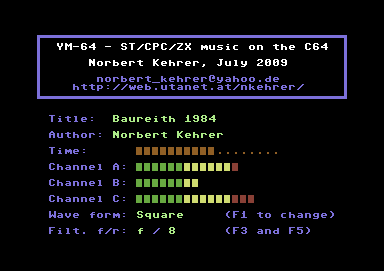

The sound chip used in the Atari ST was a Yamaha YM2149. The first two letters of the name of this chip were used as the name of the ym files and also gave the name to my program YM-64. The YM2149 was a copy of the AY-3-8910, which was used in computers like the Amstrad/Schneider CPC, the Sinclair ZX Spectrum, the MSX computers, and others. Due to the fact that these were very popular machines a lot of music written for games and demos on these computers is available in ym format.
The YM2149 was capable of generating square wave sound in three voices (channels). It had a noise generator, which could be mixed with the the three square wave channels, and a parameter controllable envelope generator.
Although the chip was quite simple, the coders and musicians were able to produce very interesting sound effects by dynamically modifying the sound registers of the YM2149 and to create many great pieces of music with astonishingly rich and full sound.
The techniques to get more out of the YM2149 and AY-3-8910 were very similar to the ones used in C64 music. The SID chip used in the C64 is also comparable to the YM2149 (although a bit more powerful in my opinion ;-). This brought me to the idea to emulate the YM2149 on the C64 and to feed the emulator with some music from the Atari ST. The ym files are perfect for that. They consist just of the sequence of the values in the sound registers of the YM2149 when it plays a piece of music. This makes it unnecessary to emulate the whole Atari ST computer, but the sound register values of the ym file are just interpreted by the YM2149 emulator.
With that method I could playback pieces of music written for computers using the YM2149 or the AY-3-8910 on the C64 as long as they were available in the form of a ym file. Fortunately, a lot of such ym music can be found in the internet, and I converted almost 10,000 ym files into programs (prg files) for the C64 and into sid files (for SID players on modern PCs).
You can download (big) zip files containing all this music as prg files or as sid files with the following links and try them on an emulator or on a real C64 (after clicking on the link you get several available download possibilities from which you can choose):
If you want to try some examples before you download the big files, here
you find some single prg and sid files:
And here is a screenshot of YM-64 running on a Commodore 64:
|  |